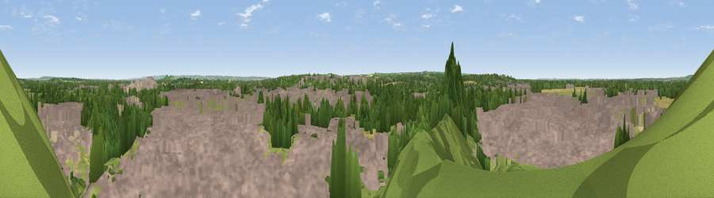

Viewpoint near Sutton Courtenay
#28794 in England · top 32% of its area beats it · near Sutton Courtenay · access?Where it is
The exact computed spot (SU 50525 92075). Click the marker for map links.
Public access: no public right of way or access land is recorded at this exact spot — it may be on private land. Computed from Natural England's CRoW access layer and OpenStreetMap rights of way — not the legal definitive map. Always verify locally.
The view, rendered

A 360° render of this exact spot computed from the terrain model, tree cover and land cover — summer colours, afternoon light, calibrated against photographs of famous viewpoints. Real trees, hedges and buildings will differ in detail.
The panorama
Grey silhouette: terrain skyline in each direction (720 bearings, Earth curvature and refraction included). Dashed green: skyline with trees (+15 m) and buildings (+8 m) as obstacles. Blue strip: how far the ground is visible on each bearing.
Where the view opens
Wedge length = distance to the farthest visible ground on that bearing (vegetation-aware). Rings at 10, 25 and 50 km.
What fills the view
60% built-up · 16% grassland · 16% woodland · 4% cropland · 3% bare ground
Angular shares of the visible panorama (visual magnitude), not map area. Landscape diversity 0.50 (0–1 Shannon).
Key numbers
More beautiful places nearby
The staircase of upgrades: each row has a higher view potential than everything closer. Driving times are estimates from straight-line distance, calibrated against real road routing — check an actual route before setting out.
| Place | Direction | Drive | Score |
|---|---|---|---|
| Viewpoint near Appleford-on-Thames | ENE · 1 km | ~4 min | 52.7 |
| Round Hill | E · 6 km | ~13 min | 70.1 |
| Viewpoint near Watlington | E · 20 km | ~33 min | 70.6 |
| Viewpoint near Woolstone | WSW · 21 km | ~35 min | 70.9 |
| Viewpoint near Woolstone | WSW · 21 km | ~36 min | 76.7 |
| Martinsell viewpoint | SW · 43 km | ~63 min | 76.9 |
| Broadway Hill | NW · 59 km | ~81 min | 77.7 |
| Viewpoint near Leckhampton | WNW · 61 km | ~84 min | 77.8 |
51.62523, -1.27152 · source: screening · position refined by local search. Computed location — check access rights before visiting.